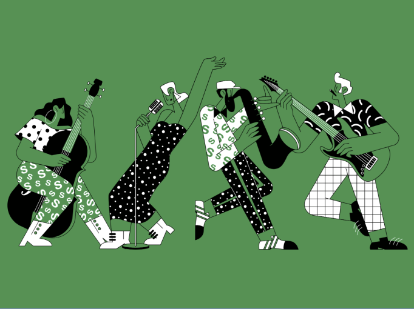
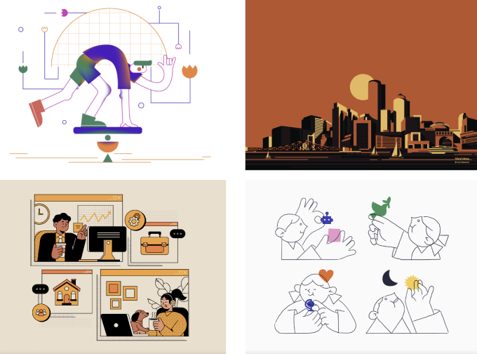
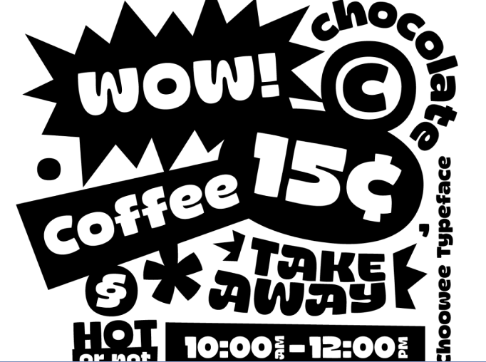
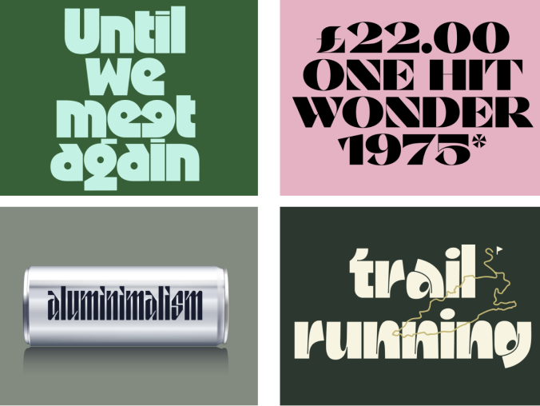
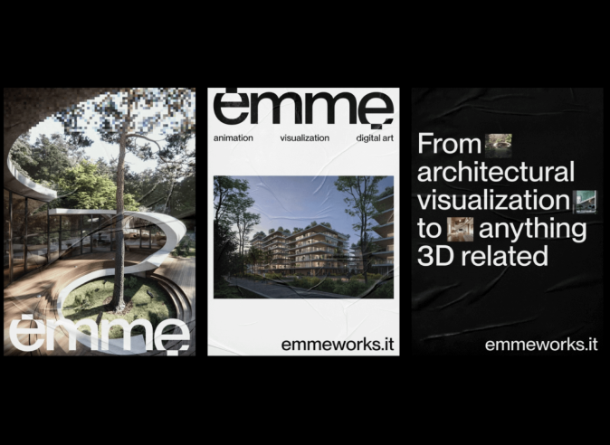

Fladt design handler om at udelade tingene og holde det enkelt eller som man siger, fladt. Dette betyder ofte minimale skygger, gradienter og 3D effekter. Med andre ord: drop alle klokkerne og fløjter og bare fokusere på al levere et klart budskab.
Fladt desing er især populært inden for tek-industrien, da det giver mulighed for strømlinje og effektivt. Plus, med minimale designelementer, er websiden i stand til at indlæse hurtigere og ændre størrelse nemt, uden at miste nogen kvalitet på high definition skærme.
 Typografi er et af de vigtigste elementer i grafisk design. Mens tekst primært bruges til at formidle et, budskab, skubber designere grænserne for, hvor langt de kan gå for at sætte nogle ekstra tegn i de bogstaver.
I 2023 betyder tilgængelig software til oprettelse af skrifttyper som Glyphs, at enhver nemt kan oprette deres egen skrifttype. Dette har resulteret i en strømlinje af “regelbrud” skrifttyper at vælge imellem. Uanset om du leder efter en skrifttype for at tilføje noget personlighed til dine desings eller ønsker at komme med et statement, der er helt sikkert en finurlig skrifttype, der passer til regningen.
  